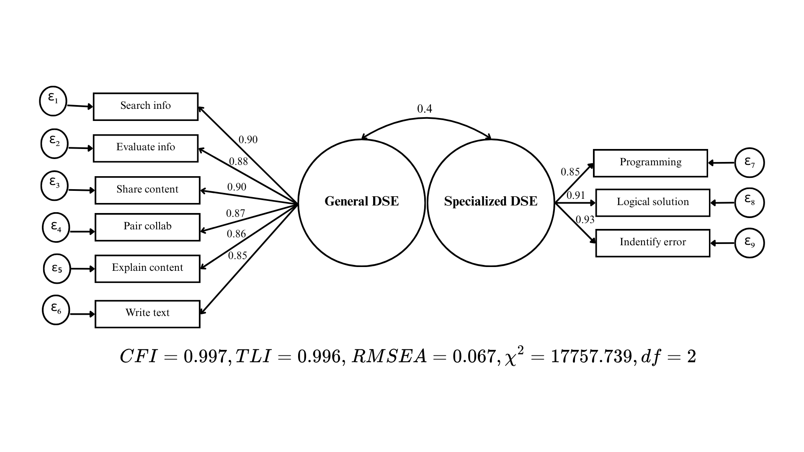
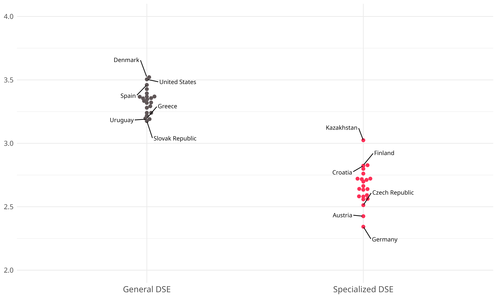
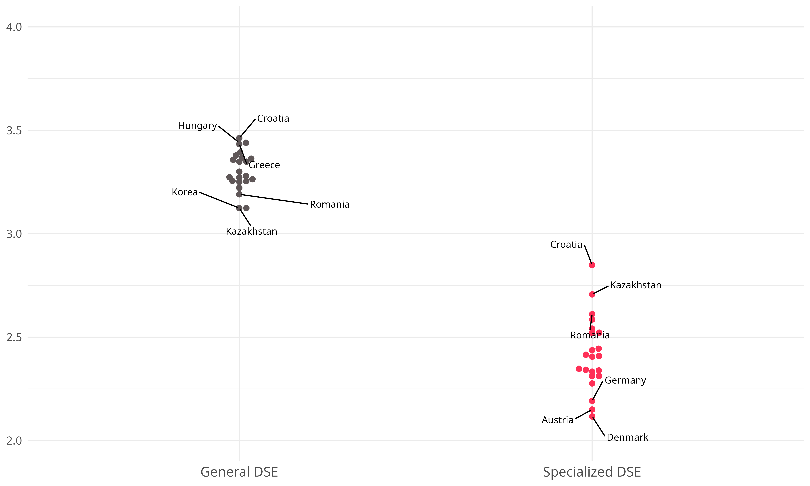
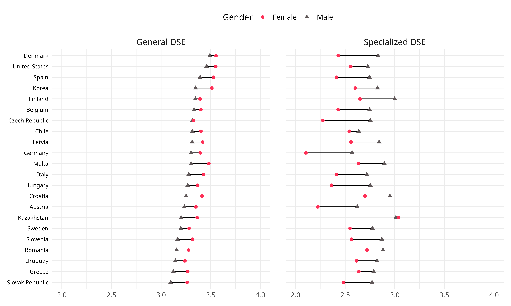
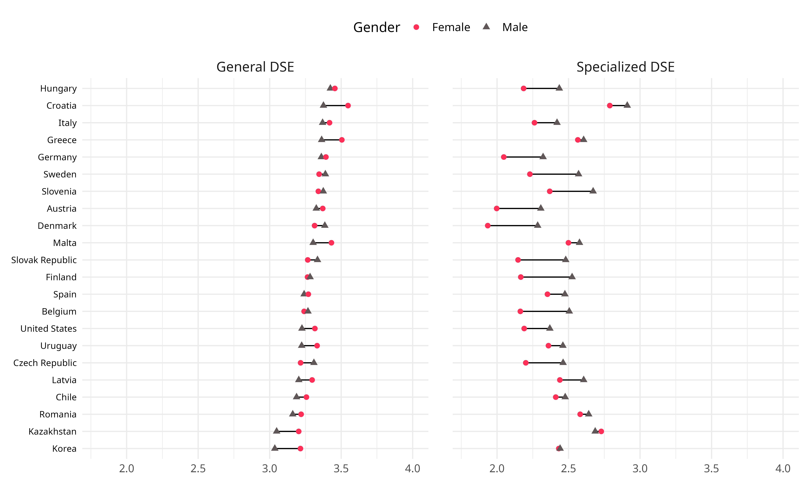

| Competence.area | Competence | Common.label | Type.of.DSE | ICILS.Label | PISA.Label |
|---|---|---|---|---|---|
| 1. Information and data literacy | 1.1 Navigate, search and filter data, information | search_info | General | Search for relevant information for a school project on the internet | Search for and find relevant information online |
| 1. Information and data literacy | 1.1 Navigate, search and filter data, information | source_info | General | Find the original sources of information referred to in an article on the internet | |
| 1. Information and data literacy | 1.2 Evaluate data, information and digital content | evaluate_info | General | Judge whether you can trust information you find on the internet | Assess the quality of information you found online |
| 1. Information and data literacy | 1.3 Manage data, information and digital content | collect_data | General | Collect and record data (e.g., using data loggers, Google Forms, spreadsheets) | |
| 1. Information and data literacy | 1.3 Manage data, information and digital content | install_app | General | Install a program or app | |
| 2. Communication and collaboration | 2.1 Interact through digital technologies/2.2 Share info | explain_content | General | Explain to other students how to share digital content online or on a school platform | |
| 2. Communication and collaboration | 2.1 Interact through digital technologies/2.2 Share info | share_content | General | Upload text, images, or video to an online profile | Share practical information with a group of students |
| 2. Communication and collaboration | 2.4 Collaborate through digital technologies | pair_collab | General | Collaborate with other students on a group assignment | |
| 3. Digital content creation | 3.1 Develop digital content | write_text | General | Write or edit text for a school assignment | Write or edit text for a school assignment |
| 3. Digital content creation | 3.1 Develop digital content / 3.2 Integrate content | create_media | General | Create a multi-media presentation (with sound, pictures, or video) | Create a multi-media presentation (with sound, pictures, or video) |
| 3. Digital content creation | 3.1 Develop digital content / 3.2 Integrate content | insert_image | General | Insert an image into a document or message | |
| 3. Digital content creation | 3.2 Integrate and re-elaborate digital content | edit_image | General | Edit digital photographs or other graphic images | |
| 3. Digital content creation | 3.1 Develop digital content | develop_webpage | Specialized | Build or edit a webpage | Create, update and maintain a webpage or a blog |
| 3. Digital content creation | 3.4 Programming | programming | Specialized | Use a text-based programming language (e.g., Python, JavaScript...) | Create a computer program (e.g., in Scratch, Python, Java) |
| 3. Digital content creation | 3.4 Programming | visual_coding | Specialized | Use visual coding (e.g., Scratch, Lego Mindstorms) to develop a simple computer program | |
| 4. Safety | 4.1 Protect devices/ 4.2 Protect personal data and privacy | change_settings | General | Change the settings on a device to suit your needs and preferences | Change the settings of a device or App in order to protect my data and privacy |
| 5. Problem solving | 5.1 Solve technical problems | identify_error | Specialized | Identify the source of an error in a software after considering a list of potential causes | |
| 5. Problem solving | 5.2 Identify needs and technological responses | identify_app | Specialized | Select the most efficient programme or App that allows me to carry out a specific task | |
| 5. Problem solving | 5.3 Use digital technologies creatively | logical_solution | Specialized | Break down a problem and represent a solution as a series of logical steps, such as an algorithm |
Digital Self-efficacy and gender in Large-scale assesments
Daniel Miranda1, Juan Carlos Castillo2, Nicolás Tobar3, Tomás Urzúa4 and Ismael Aguayo5
Abstract
…
1 Introduction
The mastery of digital technologies today requires more than physical access to devices or procedural knowledge of software; it increasingly involves attitudinal dispositions such as confidence, persistence, and the capacity to adapt in complex environments (European Commission Joint Research Centre, 2022). Research in educational psychology has consistently highlighted self-efficacy as a key determinant of how individuals engage with technology. Defined as the belief in one’s ability to accomplish tasks and overcome obstacles in digital contexts, digital self-efficacy (DSE) has emerged as a central construct in understanding the development of digital competences (Bandura, 1995; Ulfert-Blank & Schmidt, 2022). Unlike purely skill-based measures, DSE captures both perceived capability and self-regulatory attitudes, making it particularly useful for explaining why some learners successfully navigate digital transformations while others struggle (Rohatgi et al., 2016; Scherer & Siddiq, 2019).
Within this attitudinal dimension, evidence has consistently revealed gender-related patterns. Historically, women have reported lower levels of self-confidence and motivation in digital environments, especially in tasks associated with STEM or advanced technical applications (Cai et al., 2017; Hargittai & Shafer, 2006). However, more recent studies suggest a nuanced picture: while women continue to show lower self-efficacy in specialized digital domains such as programming or data analysis, they now frequently outperform or equal men in general DSE tasks related to information navigation, communication, and content creation (Gebhardt et al., 2019). These shifts indicate that the relationship between gender and DSE is dynamic, contingent upon how digital tasks are conceptualized and measured.
Such attitudinal differences are also shaped by broader sociocultural and educational contexts. Cross-national studies show that the magnitude of the gender gap in digital self-efficacy varies considerably depending on how societies adopt and integrate technologies into everyday life (Campos & Scherer, 2023; Hatlevik et al., 2018a). This contextual variability underscores the importance of measurement models that are not only valid within single cultural settings but also comparable across diverse populations. Without rigorous tests of measurement invariance, it is difficult to determine whether observed differences reflect substantive disparities or methodological artifacts (Leitgöb et al., 2023).
International large-scale assessments (ILSAs) provide an unparalleled opportunity to examine these issues. Studies such as the International Computer and Information Literacy Study (ICILS) and the Programme for International Student Assessment (PISA) include DSE measures, but they differ in important ways. PISA has traditionally adopted a unidimensional approach, aggregating digital self-confidence into a single scale (OECD, 2023), whereas ICILS uses a bidimensional framework, distinguishing between general and specialized DSE (Fraillon et al., 2020). Although ICILS and PISA differ in the wording of the items, if one examines the meaning of the items in depth, they are similar in terms of the tasks, which does not justify their different measurement strategies.
These differences are more than technical: they affect how countries governments interpret digital readiness and how gender disparities are identified. Against this background, the present study contributes by (i) testing whether a two-dimensional model of DSE —general and specialized— can be identified in both PISA and ICILS, (ii) evaluating its measurement invariance across gender and countries, and (iii) exploring determinants on gender differences at country level for both studies. By doing so, we aim to clarify whether differences in DSE are consistent across contexts or instead a product of how assessments operationalize the construct.
2 Self-efficacy and Digital Technologies
Self-efficacy is an orchestration or continued improvisation of multiple skills to manage the ever-changing situation around mastering an activity. As part of the forethought element of human agency, Self-efficacy is not the simple self-perception about the ability to execute an action, is concerned by judgments of how well one can execute courses of action required to deal with prospective situations. Self-efficacy is a type of self-assessment or expectatives to produce particular outcomes, crucial for reinforcing the mastery of the activity to which one is dedicated (Bandura, 1982, 1997).
This concept occupies a pivotal role in the causal structure of adaptation and change in learning contexts through its effect on other cognitive determinants. i) Efficacy plays a central role in the self-regulation of motivation through goal challenges and outcome expectations. ii) Efficacy determines the challenge to undertake, how much effort to expend in the endeavor, how long to persevere in the face of obstacles and failure, and whether failures are motivating or demoralizing. iii) Efficacy beliefs also play a key role in shaping the courses lives take by influencing the types of activities and environments people choose to get into. In synthesis, efficacy shapes the mindset, choices on path-life, and change of environments, crucial for creating fulfilling standards and obtaining performance accomplishments across learning activities (Bandura, 1995; Steele & Aronson, 1995).
Self-efficacy has proven to be particularly relevant when it comes to digital technologies learning achievements. A whole thematic research agenda has opened up around self-efficacy role on the adoption and competences on digital technologies, although there are scattered efforts when it comes to measuring this construct.
The first antecedents of self-efficacy applied to digital issues resorted to ‘Computer self-efficacy’. Compeau & Higgins (1995) proposed this early instrument focused on general computer domains and specific software application tasks. Defined as individual’s perceptions of his or her ability to use computers in the accomplishment of a task (ie., using a software package for data analysis, writing a mailmerge letter using a word processor), rather than reflecting simple component skills (ie., formatting diskettes, booting up a computer, using a specific software feature such as “bolding text” or “changing margin”). The computer self-efficacy construct was criticized and overcome for neglecting the changing dynamics of digital systems, which extender the digital enviroment over computers. The items of these scales tend to become outdated rapidly (Durndell & Haag, 2002; Weigel & Hazen, 2014).
While the increasing importance of interconnection with technologies, the focus turn on Internet Self-efficacy, which was defined as the general one’s judgment of confidence to accomplish different tasks related to online use of technologies. Internet Self-efficacy it does not refer to operative simple tasks, such as writing HTML, using a browser, or transferring files, for example. Instead, it assesses a person’s judgment of their ability to apply Internet skills in a more encompassing mode, such as finding information, social communication, or troubleshooting search problems. Internet self-efficacy may be distinguished from computer self-efficacy as the belief that one can successfully perform a distinct set of behaviors required to establish, maintain, and utilize effectively the Internet over and above basic personal computer skills (Eastin & LaRose, 2000; Hsu & Chiu, 2004)
Although this new construct partially addressed the obsolescence of technologies, the set of digital activities was reduced to a particular domain, as is the case with the Internet and online interactions. An ICT Self-efficacy scale was proposed to comprise Computer and internet tasks on the same construct. ICT Self-efficacy construct considers digital information processing and content creation (Aesaert & van Braak, 2014; Hatlevik et al., 2018b). Also, more advanced skills, such as programming or web development (Rohatgi et al., 2016), started to be considered. Although to its new measures, ICT Self-efficacy usually presents unidimensional concepts or focuses on specific application domains (using ICT for work, school, or leisure) rather than competencies applicably for general life domains (Ulfert-Blank & Schmidt, 2022).
The current measures have common limitations in various ways. First, they often do not consider more recent frameworks of digital competences, such as the DigComp, regarding their level of generality, the competences included, and their multidimensionality. The DigComp describes digital competences in terms of general actions (i.e., tasks, functions), such as protecting devices or managing data, that can be applied to a heterogeneous group of individuals and are independent of specific digital systems. Most DSE scales are still system (e.g., specific computer software) or technology-specific (e.g., data storage such as floppy disc) and may thus become outdated. Second, critical competence areas, such as safety and problem-solving are often disregarded. Most of the scales focus on the informational, communicative, and creative aspects of the technologies without exhaustively capturing their dimensions of mastery. Third, the term DSE has been used interchangeably for measuring general competence beliefs (i.e., including items assessing self-concept, another competence belief) or actual proficiency. As a result, this has led to inconsistencies in the representation of the DSE construct in the literature. This is in spite of self-efficacy literature offering clear definitions of how measures should be constructed and its well-defined differentiation from related constructs (Ulfert-Blank & Schmidt, 2022).
Ulfert-Blank & Schmidt (2022) suggests to work with an unified construct denominated Digital Self-efficacy to reach a high-level research on this issue. Considering the gaps and inconsistencies in previous measurements, Ulfert-Blank & Schmidt (2022) points out that DSE construct have to (1) be theoretically-grounded multi-dimensional measures of DSE, encompassing diverse digital competence areas, (2) cover different functions and tasks of digital systems, (3) be independent of a specific digital system (e.g., Word).
3 Measuring Digital Self-efficacy
Generally, Self-efficacy has two ways to be studied: As perceived capabilities for task achievement and as a self-regulatory attitude. Task self-efficacy involves the beliefs that one can or cannot perform a single instance of a circumscribed behavior at different levels of performance. Self-regulatory self-efficacy is the confidence in how one can (or could) achieve tasks in the context of potential barriers. Studies focusing on capabilities usually emphasize the magnitude of the task, i.e., its degree of difficulty or complexity, and the linear achievement of the masterization process. By contrast, studies focused on attitudinal aspects give greater importance to persistance or resistance in the face of adversities presented in the enviroment involved in an activity (Marlatt et al., 1995; Schwarzer & Renner, 2000; Williams & Rhodes, 2016).
Digital self-efficacy measurements are generally based on the linear achievement of tasks, more than the development of a strong confident self-attitude with technologies. Although some studies define DSE as a unidimensional construct, measuring individuals’ task achievement in using digital technologies without distinguishing between types of tools and/or levels of complexity (Hatlevik et al., 2015; Rohatgi et al., 2016), another range of studies adopt a bidimensional approach, which categorise as ‘general or basic DSE’ a first level of achievement considering widespread skills around handling information (browsing the web, evaluating the accuracy of information on the internet, installing programmes), communicating or collaborating through technologies (uploading content to social media, creating online profiles) and creating digital content (designing images, videos and text). A second level of achievement, jerarquically above the previous one, considers high technical expertise on computational tasks such as using programming languages, application development, or website management. Generally, is labelled as ‘specialized or advanced DSE’ (Gebhardt et al., 2019; Pasha, 2024).
Both the unidimensional and the bidimensional approaches not only influence measurement instruments but also lead to different research findings: unidimensional models could underestimate the predictive power of DSE for complex digital enviroments, while bidimensional models offer greater explanatory precision but can introduce challenges such as construct overlap or reduced generalizability across contexts, limiting findings across educational systems and cultural contexts (Aesaert et al., 2017; Campos & Scherer, 2023; Scherer et al., 2023; Siddiq & Scherer, 2019). Thus, the choice between unidimensional and bidimensional models of DSE is not merely theoretical, as it has significant implications for the validity, reliability, and utility of research on digital competence development.
However, although evidence shows that self-efficacy in technological area improvement does not follow a positive linear direction with performance, it is noteworthy that studies in the area of DSE focus closely on task achievement rather than on developing attitudes for dealing with situated difficult situations in digital learning processes (Bandura, 1995; Fabia, 2024; Mekheimer, 2025).
4 PISA and ICILS different approachs
International Large-scale Assessment have become one of the most important types of studies in the field of education, characterized by the deployment of their surveys throughout the world, enabling cross-country analysis with large volumes of data. Recently, several ILSA studies have included sections on digital topics as it’s relevance in the current social life (Fraillon et al. 2013), where digital self-efficacy has earned its place.
There are two main studies that include digital topics in their surveys. First, International Computer and Information Literacy Study (ICILS), belonging to the International Evaluation Assosiation (IEA). ICILS is a study focused on digital competences, which seeks to answer the question: How well are students prepared to study, work and live in a digital world? To this end, the study measures computer and information literacy achievement through a standardsized test. The second study is organized and executed by the OECD, called Programme for International Student Assessment (PISA). PISA is recognized by measuring the abilities of 15-year-old adolescents to use their knowledge in reading, mathematics and science to face challenges in real life. This ILSA stands out for the great thematic versatility of its questionnaires, including digital themes in the ICT familiarity module.
Each of these studies understands and, consequently, measures DSE differently. PISA has a one-dimensional approach, as can be inferred from a single battery consisting of 14 items. These items ask about different skills, from text editing in digital services to identifying the source of an error in software. In contrast, ICILS proposes a two-dimensional perspective of DSE, distinguishing between general DSE and specialized DSE. General dimension encompasses tasks that do not require in-depth knowledge of how digital devices work like search and find information on internet. Specialized DSE tasks requires greater mastery of digital skills, as they are more complex to perform like create a computer program.
Probably, these different considerations of DSE dimensions are due to the distinct approaches that both studies have towards self-efficacy concept. PISA presents greater contextualization in its items, defining the existence of obstacles in some and a procedural nature for overcoming them. ICILS opts for a battery focused on the operational aspect of task completion, whose items reflect greater relevance in the completion of a specific task rather than in carrying out an evaluative process of how to solve a problem. In this sense, PISA places greater emphasis on regulatory self-efficacy than ICILS, and therefore, it does not attempt to differentiate tasks based on their level of technical difficulty..
Despite distinct approach, the two studies contain tasks that can be categorized into a more general dimension and a specialized one. PISA and ICILS share items that focus on tasks with a low degree of technical complexity, such as searching for information online and/or editing text for a school subject, but both studies also include items that refer to the creation and maintenance of web pages or programming software.
Considering the previous statements, The first hypothesis is of this study is H1 It is possible to identify two latent dimensions of digital self-efficacy (general and specialized) based on related batteries and indicators included in large-scale assessments such as PISA and ICILS (bi-dimensional hypothesis).
The fact that PISA can be understood from a two-dimensional perspective poses a challenge in terms of scale stability, i.e., that these two dimensions are consistent with the data collected. Furthermore, the fact that studies understand self-efficacy under models with different dimensions prevents the comparability of the batteries from being studied. Therefore, with the intention of validating these constructs in the different countries where it is applied, the following hypothesis is proposed:
By the way, the second hypothesis is H2 The bi-dimensional measurement model of digital self-efficacy is equivalent across countries. Furthermore, the literature has shown that there are significant gender differences depending on the type of dimension (Gebhardt et al., 2019), so it is also necessary to test the stability of the scales by gender. Then the third hypothesis: H3 The bi-dimensional measurement model of digital self-efficacy is equivalent between girls and boys
5 Methods
5.1 Data
ICILS 2023 employed a two-stage cluster sampling approach across 34 countries and more than 130,000 studentes around the world. In the first stage, schools with students in the target grade were randomly selected using a probability proportional to size (PPS) method. In the second stage, one intact class was randomly selected within each sampled school, and all students in that class were invited to participate (Fraillon, 2024).
PISA 2022 target population consists of 15-year-old students attending educational establishments, employing a two-stage stratified sampling design. In the first stage, schools were systematically selected with PPS from national sampling frames. In the second stage, a target number of students (typically 42) were randomly selected with equal probability from within each sampled school. Official subset of data reach around 393,000 students, nested on 52 countries (maily OECD).
To ensure comparability, both datasets were filtered to include only those countries which participated in PISA ICT questionnaire and the ICILS survey. Furthermore, to maximize the overlap between the samples, specific adjustments were made. In ICILS data, Germany is reported as two separate regions reflecting its distinct educational systems; for this analysis, these regions were aggregated to form a single national entity. Similarly, the ICILS data for Belgium were collected exclusively from the Flemish Community (Flanders) in this wave. To align the datasets, the data from Flanders were treated as representative of the entire country.
The final country-level sample include 22 countries, with 91,132 nested students in ICILS and 183,902 in PISA.
5.2 Variables
Both studies include a module on digital self-efficacy in their questionnaires. In ICILS the items are introduced with the phrase “How well can you do:” and recoded categories are 1 = I do not think I could do this; 2 = I have never done this, but I could work out how to do it; 3 = Moderately well; 4 = Very well. PISA module preface the items with the question “To what extent are you able to do the following tasks when using <digital resources>?”, where <digital resources> is a placeholder for a term adapted to the target culture. PISA recoded categories are 1 = I cannot do this; 2 = I struggle to do this on my own; 3 = I can do this with a bit of effort; 4 = I can easily do this. Responses as “I don’t know” was threated as missing values. A complete comparison of the items from both surveys is presented in Table 1, highlighting the concordances and distinctions between the studies, and the type of DSE we are assuming to match the item.
We also consider the three-digit ISO country code and the student’s sex (recoded as 1 = male and 2 = female) from both datasets.
5.3 Analytical Strategy
All data management and analyses were conducted using the R statistical environment. The data wrangling were developed using R packages dplyr and haven.
The main analyses were performed within a Confirmatory Factor Analysis (CFA) framework to test the hypothesized two-factor structure of DSE (Brown, 2015). The CFA models were estimated with the lavaan package (Rosseel, 2012). Given the ordinal nature of the Likert-scale items, they were treated as ordered categorical variables. Models were estimated using the Weighted Least Squares Mean and Variance Adjusted (WLSMV) estimator. Missing data were handled using pairwise deletion, which is the standard approach for this estimator in lavaan besides the (default) listwise deletion.
To evaluate the goodness-of-fit of the models, chi-square (χ²) test was used. However, due to the test’s sensitivity to large sample sizes, model evaluation primarily relied on a complementary set of fit indices: the Comparative Fit Index (CFI), the Tucker-Lewis Index (TLI), and the Root Mean Square Error of Approximation (RMSEA). Following common guidelines, CFI and TLI values of 0.95 or higher are considered indicative of excellent fit, while values between 0.90 and 0.95 are considered acceptable. For RMSEA, values of 0.06 or less indicate a close fit, while values up to 0.08 are considered adequate (Brown, 2015; Wang & Wang, 2012).
First, a pooled model was estimated to test the overall fit of the hypothesized model across both studies. In instances where the initial model failed to achieve an acceptable fit, a principled procedure of model re-specification was undertaken. Sources of model misfit were diagnosed by examining multiple indicators, including standardized factor loadings and modification indices. Items identified as primary sources of misspecification were considered for removal. Any modification was contingent upon a strong theoretical justification on Ulfert-Blank & Schmidt (2022) framework: Items with ambiguity dimension or content overlap were prioritized to remove, ensuring that the construct’s content validity was not compromised. This process was performed judiciously to arrive at a final, well-fitting model that remained theoretically coherent. A factor was required to have a minimum of three indicators to be retained.
In the next step, to test the comparability of this measurement model across countries and genders, a series of Multi-Group Confirmatory Factor Analyses (MGCFA) was conducted to assess Measurement Equivalence or Invariance (ME/I) (e.g., Beaujean, 2014; Davidov et al., 2014). This procedure involves testing three sequential levels of invariance by imposing progressive restrictions: 1) configural invariance, which tests if the same factor structure holds for all groups; 2) metric invariance, which adds the constraint that factor loadings are equal across groups; and 3) scalar invariance, which further constrains item intercepts (or thresholds for ordinal items) to be equal (Cheung & Rensvold, 2002; Milfont & Fischer, 2010). The establishment of invariance between these nested models was evaluated by examining the change in CFI (ΔCFI) and RMSEA (ΔRMSEA). Specifically, for metric (weak) invariance, a change in CFI of ≥ -0.004 and a change in RMSEA of ≤ 0.050 were considered acceptable. For scalar (strong) invariance, a ΔCFI of ≥ -0.004 and a ΔRMSEA of ≤ 0.010 were considered adequate (Rutkowski & Svetina, 2017). Achieving metric invariance is a prerequisite for further analysis of association among dimensions of DSE with factors. Achieving scalar invariance is a prerequisite for further analysis of association among dimensions of DSE with factors and estimation of the latent means across countries and across gender.
Upon establishing scalar invariance, latent mean scores of General and Specialized DSE country distribution are explored. In the next step the magnitude of the DSE gender gap is visualized for each country.
6 Results
6.1 Pooled models
The models originally hypothesized for both studies did not achieve an initial fit, thus requiring several modifications to meet the established criteria. Regarding PISA, the pooled model yielded the following fit indices: CFI = 0.98; TLI = 0.97; RMSEA = 0.15, exceeding the maximum acceptable RMSEA threshold of 0.08. Given this result, a model re-specification process was undertaken, removing items from the model. The first item dropped from the model was ‘identify app’, which, according to the modification indices, cross-loaded on the general sub-dimension of the latent variable (MI = 113,132). This item, unlike the others in the specialized sub-dimension, does not refer to tasks specifically related to programming, which may explain why it did not fit well within the factor. The next item removed was develop webpage, due to its cross-loading on the general DSE factor (MI = 61,606). It is possible that due to the propagation and popularization of ‘user-friendly’ platforms for website creation, this skill is no longer considered advanced by young people. The next item removed was change settings, due to it cross-loading on the specialized DSE factor (MI = 9,168). This item is not directly related with the most basic ‘digital literacy’ dimensions recognized in the DigComp framework (information, communication, and creation), but rather to the dimension related to privacy. Next, the collect data item was dropped, as modification indices indicated it cross-loaded on the specialized DSE factor (MI = 11,187). Although this item requires deeper analysis, the basic data collection and analysis skills it assesses seem to be perceived as more complex by students. Finally, the create media item was extracted from the model, as modification indices suggested it cross-loaded on the specialized sub-dimension (MI = 7,927). Although we lack substantive evidence to affirm this, it is plausible that the perceived threshold for proficiency in multimedia skills has increased for students, given the wide availability of high-quality multimedia content on the internet.
In the case of ICILS, the model also failed to fit due to a very high RMSEA; its fit indices were: CFI = 0.97; TLI = 0.96; RMSEA = 0.1. Again, a re-specification process of the hypothesized model was followed. First, source info was removed from the model, as it cross-loaded on the specialized DSE factor (MI = 18,633). Identifying an information source today has become very complex; tracing the origin of a specific piece of data is something that, in the students’ view, apparently requires greater specialization. So much so, that this item shows high shared variance with visual coding and programming. Then, just as in the previous study, change settings was removed, due to it not being related to the basic dimensions of the DigComp framework. Finally, two items related to multimedia skills were removed due to cross-loading on the specialized DSE factor: create media (MI = 6,174) and edit image (MI = 6,510). The fact that in both studies these items lean towards the specialized self-efficacy factor leads us to think that, rather than a measurement issue specific to one study, the students’ perceived difficulty of editing and managing audio, video, and image skills is genuinely changing.
Given the above, the following re-specified two-dimensional DSE models are proposed for both studies.
6.2 Modified-Fitted models
Figure 1: PISA fitted model

Figure 2: ICILS fitted model
In both studies, the general factor remains with six items and the specialized factor with three. In PISA, the fit indices are within the excellent fit range (>0.95) for CFI and TLI, and the acceptable range (<0.08) for RMSEA. All factor loadings are greater than 0.85, indicating that the proposed factors explain a good portion of the variance of the items comprising the latent variable (at least 72.3%). The correlation between the two factors is moderate, at 0.4.
Regarding ICILS, the model shows a slightly looser fit than in PISA. Although the CFI and TLI also indicate an excellent fit, the RMSEA is just at the borderline to be considered acceptable. In addition to this, the factor loadings are somewhat lower, although they still show high magnitude, with values ranging from 0.68 to 0.84, meaning they would explain, in the worst-case scenario, 46.2% of the item variance. The correlation between both factors is very similar to the PISA model, at 0.43.
6.3 Multigroup CFA and invariance analysis
Starting with cross-country invariance, the PISA study passed all three tested levels (configural, metric, and scalar), showing changes in the key fit indices (\(\Delta\)CFI and \(\Delta\)RMSEA) that were within acceptable ranges. This establishes cross-country comparability and permits subsequent analyses. On the other hand, while ICILS achieved configural and metric invariance, scalar invariance could not be established due to a change in CFI (-0.007) that exceeded the cut-off criterion. This allows us to compare the factor loadings across countries, but it does not permit the comparison of latent means, as groups may interpret the items differently (i.e., the intercepts are not equivalent).
Regarding gender invariance, both studies achieved scalar invariance. The changes between the nested models (\(\Delta\)CFI and \(\Delta\)RMSEA) were within the acceptable ranges (i.e., below the problematic cut-offs). The latent constructs are comparable across genders in both studies, permitting comparative analyses of both factor loadings and latent means.
6.4 Descriptives by gender and country
This section reports descriptive analyses by country and gender for both dimensions in the two studies. We opted to use averaged indices rather than latent mean scores for DSE for two main reasons: (1) in both studies, the correlation between the summative index and the latent mean for each dimension (general and specialized) exceeded 0.95 in all countries; (2) using indices preserves the original scale of the items, facilitating interpretation of the descriptive results. Although ICILS failed to achieve scalar invariance across countries, we present its descriptive results with the caveat that intercept variability across countries limits comparability. In each database, indices were computed only for observations included in the pairwise model estimation to ensure consistent treatment of missing data.
Figure 3: PISA country scores comparison

Figure 4: ICILS country scores comparison

In both studies, general DSE scores higher than specialized DSE, as expected. The difference is somewhat larger in ICILS. The most striking finding concerns the distribution of countries in the specialized dimension, where countries with lower technological development report higher aggregate self-efficacy (e.g., Kazakhstan), while countries with better performance on the CIL test rank at the bottom of the distribution (e.g., Germany, Austria).
Figure 5: PISA gender gaps by country

Figure 6: ICILS gender gaps by country

Regarding gender gaps across different cultures, we observe similar patterns in both PISA and ICILS. Consistent with the literature, we expected girls to score higher on the general dimension and boys to score higher on the specialized dimension. In PISA, Figure 6 shows that girls consistently score higher on the general dimension, while boys demonstrate higher self-efficacy on the specialized dimension, with notably larger gaps. In ICILS (Figure 7), the gender gap on the general dimension is less consistent across countries, with some instances showing negligible differences. On the specialized dimension, boys again show substantially larger advantages. A counterintuitive finding from both studies concerns the relationship between countries’ gender equality development and the magnitude of gender gaps favoring boys on specialized tasks: countries such as Germany, Denmark, and Finland exhibit considerably larger gaps on the specialized dimension than countries like Chile or Kazakhstan.
7 Discussion
Although PISA and ICILS differ in their strategies for measuring DSE, a reduced scales in both studies reviewed demonstrate clear two-dimensional behavior. The items that were eliminated reveals important trends to consider for innovating future measurements.Some tasks that do not belong to the basic set of digital literacy (i.e. information, communication, and creation) did not fit into the proposed two-dimensional model, anchored to a linear distinction of the degree of difficulty of the tasks to group the factors. For example, expectations for achieving changes in device settings, specific to managing user ‘privacy,’ distort the model in both studies. Likewise, other tasks did not seem to have the same meaning that students had given them in previous measurements. While in previous versions of these studies, web page development was a clearly distinctive skill of specialized technology users, the results suggest that it shares considerable variance with the latent construct of general self-efficacy. The opposite is true for multimedia content creation, which has moved from general self-efficacy to a blurred area between the two dimensions. Technological contexts change over time. It is likely that new developments in digital tools have brought some tasks that were previously challenging for the general public closer together, while other tasks that previously appeared to be simple have become more complex than usual.
The factor analysis confirms that it is possible to obtain a common scale from the data that is relatively comparable across cultures and by gender. ICILS present moderate problems with scalar invariance adjustments by country, which can be explained because the different understandings of self-efficacy behind the strategies of measuring. Since PISA tends to give a context of difficulty to the construct, which involves the development of logical thinking and a social context behind it, it achieves better levels of adjustment than ICILS, a study that focuses on the performance achievement of tasks in abstract. By introducing less information, cultural differences are likely to differentiate the way students from different countries interpret the meaning of the question.
In both studies, overall countries demonstrate major levels of general than specialized self-efficacy. The gender mean distribution of general self-efficacy show minimal gaps in favor of girls, while specialized self-efficacy favors boys to a considerable extent. A counterintutive result points that less developed countries as Kazakhstan or Romania present the best specialized scores, in spite of their bad peformance on general self-efficacy. At the same time, catches the attention the reduced or neutralized gender specialized self-efficacy gap of global-south countries as Chile, Korea, Kazakhstan, where policies aimed at encouraging STEM engagement on girls are supposedly less intense than the global-north countries, where the gap tend to be higher. The consistency between the two studies confirms a recent trend within gender and STEM literature: the paradox that in countries with less gender equality, attitudinal differences between men and women tend to decrease (marsh_illusory_2021?; guo_crosscultural_2024?).
8 Conclusions
Based on a comparative study between PISA and ICILS, this paper demonstrated that digital self-efficacy can be studied from a two-dimensional perspective, even when it is not understood in this way, as in the case of PISA. This result challenges the measurement of digital self-efficacy by ILSAs, since considering all tasks within the same range of difficulty can have serious implications when studying students’ digital self-efficacy, especially when considering that the two-dimensional approach is equivalent across countries and genders.
The present study encountered two limitations. First, in order for the models to obtain acceptable fit indices, items had to be removed from the batteries in both studies. Therefore, invariance works, but not without first modifying the model specifications. Second, only one measurement from each study was used (PISA 2022 and ICILS 2023 respectively), which does not allow for the identification of stability in digital self-efficacy scales over time. Considering this, it is extremely important to continue this line of work and conduct research that addresses the reliability of the scales, taking into account the time factor. In addition, study organizers should seriously consider new ways of measuring digital self-efficacy in contexts that are changing at a rapid pace.
This study contribute to think that differences in technology engagement are not homogeneous and do not present in the later stages of education. Already in elementary school students (14 years old), it is possible to see that girls in several countries inconsistently show less confidence with advanced technologies, although they have a slight advantage in general-purpose technologies. Through longitudinal methods, future studies should evaluate when and why these DSE inequalities awaken in the growth of boys and girls.
Finally, it remains to reflect on the contextual variables that may be determining gender digital divides. The results provided some clues: developed countries show greater gender gaps in specialized self-efficacy compared to underdeveloped countries. This counterintuitive finding raises a number of questions for the future, such as what are the structural characteristics of countries that exhibit this dynamic, as well as delving deeper into the cultural patterns among male and female students that widen existing gaps.
References
Aesaert, K., & van Braak, J. (2014). Exploring factors related to primary school pupils’ ICT self-efficacy: A multilevel approach. Computers in Human Behavior, 41, 327–341. https://doi.org/10.1016/j.chb.2014.10.006
Aesaert, K., Voogt, J., Kuiper, E., & van Braak, J. (2017). Accuracy and bias of ICT self-efficacy: An empirical study into students’ over- and underestimation of their ICT competences. Computers in Human Behavior, 75, 92–102. https://doi.org/10.1016/j.chb.2017.05.010
Bandura, A. (1982). Self-efficacy mechanism in human agency. American Psychologist, 37(2), 122–147. https://doi.org/10.1037/0003-066X.37.2.122
Bandura, A. (Ed.). (1995). Self-efficacy in changing societies (pp. xv, 334). Cambridge University Press. https://doi.org/10.1017/CBO9780511527692
Bandura, A. (1997). Self-efficacy: The exercise of control (pp. ix, 604). W H Freeman/Times Books/ Henry Holt & Co.
Beaujean, A. A. (2014). Latent Variable Modeling Using R: A Step-by-Step Guide. Routledge. https://doi.org/10.4324/9781315869780
Brown, T. (2015). Confirmatory Factor Analysis for Applied Research: Second Edition. Guildford.
Cai, Z., Fan, X., & Du, J. (2017). Gender and attitudes toward technology use: A meta-analysis. Computers & Education, 105, 1–13. https://doi.org/10.1016/j.compedu.2016.11.003
Campos, D. G., & Scherer, R. (2023). Digital gender gaps in Students’ knowledge, attitudes and skills: An integrative data analysis across 32 Countries. Education and Information Technologies. https://doi.org/10.1007/s10639-023-12272-9
Cheung, G. W., & Rensvold, R. B. (2002). Evaluating goodness-of-fit indexes for testing measurement invariance. Structural Equation Modeling, 9(2), 233–255. https://doi.org/10.1207/S15328007SEM0902_5
Compeau, D. R., & Higgins, C. A. (1995). Computer Self-Efficacy: Development of a Measure and Initial Test. MIS Quarterly, 19(2), 189–211. https://doi.org/10.2307/249688
Davidov, E., Meuleman, B., Cieciuch, J., Schmidt, P., & Billiet, J. (2014). Measurement equivalence in cross-national research. Annual Review of Sociology, 40, 55–75. https://doi.org/10.1146/annurev-soc-071913-043137
Durndell, A., & Haag, Z. (2002). Computer self efficacy, computer anxiety, attitudes towards the Internet and reported experience with the Internet, by gender, in an East European sample. Computers in Human Behavior, 18(5), 521–535. https://doi.org/10.1016/S0747-5632(02)00006-7
Eastin, M. S., & LaRose, R. (2000). Internet Self-Efficacy and the Psychology of the Digital Divide. Journal of Computer-Mediated Communication, 6(1), 0–0. https://doi.org/10.1111/j.1083-6101.2000.tb00110.x
European Commission Joint Research Centre. (2022). DigComp 2.2, The Digital Competence framework for citizens: With new examples of knowledge, skills and attitudes. Publications Office.
Fabia, J. N. V. (2024). Students satisfaction, self-efficacy and achievement in an emergency online learning course. Research in Learning Technology, 32. https://doi.org/10.25304/rlt.v32.3179
Fraillon, J. (Ed.). (2024). An International Perspective on Digital Literacy: Results from ICILS 2023. International Association for the Evaluation of Educational Achievement.
Fraillon, J., Ainley, J., Schulz, W., Friedman, T., & Duckworth, D. (2020). Preparing for Life in a Digital World: IEA International Computer and Information Literacy Study 2018 International Report. Springer Nature. https://doi.org/10.1007/978-3-030-38781-5
Gebhardt, E., Thomson, S., Ainley, J., & Hillman, K. (2019). Gender Differences in Computer and Information Literacy: An In-depth Analysis of Data from ICILS (Vol. 8). Springer International Publishing. https://doi.org/10.1007/978-3-030-26203-7
Hargittai, E., & Shafer, S. (2006). Differences in Actual and Perceived Online Skills: The Role of Gender. Social Science Quarterly, 87(2), 432–448. https://doi.org/10.1111/j.1540-6237.2006.00389.x
Hatlevik, O. E., Gumundsdóttir, G. B., & Loi, M. (2015). Digital diversity among upper secondary students: A multilevel analysis of the relationship between cultural capital, self-efficacy, strategic use of information and digital competence. Computers & Education, 81, 345–353. https://doi.org/10.1016/j.compedu.2014.10.019
Hatlevik, O. E., Throndsen, I., Loi, M., & Gudmundsdottir, G. B. (2018a). Students’ ICT self-efficacy and computer and information literacy: Determinants and relationships. Computers & Education, 118, 107–119. https://doi.org/10.1016/j.compedu.2017.11.011
Hatlevik, O. E., Throndsen, I., Loi, M., & Gudmundsdottir, G. B. (2018b). Students’ ICT self-efficacy and computer and information literacy: Determinants and relationships. Computers & Education, 118, 107–119. https://doi.org/10.1016/j.compedu.2017.11.011
Hsu, M.-H., & Chiu, C.-M. (2004). Internet self-efficacy and electronic service acceptance. Decision Support Systems, 38(3), 369–381. https://doi.org/10.1016/j.dss.2003.08.001
Leitgöb, H., Seddig, D., Asparouhov, T., Behr, D., Davidov, E., De Roover, K., Jak, S., Meitinger, K., Menold, N., Muthén, B., Rudnev, M., Schmidt, P., & van de Schoot, R. (2023). Measurement invariance in the social sciences: Historical development, methodological challenges, state of the art, and future perspectives. Social Science Research, 110, 102805. https://doi.org/10.1016/j.ssresearch.2022.102805
Marlatt, G. A., Baer, J. S., & Quigley, L. A. (1995). Self-efficacy and addictive behavior. In Self-efficacy in changing societies (pp. 289–315). Cambridge University Press. https://doi.org/10.1017/CBO9780511527692.012
Mekheimer, M. (2025). Technological self-efficacy, motivation, and contextual factors in advanced EFL e-learning: A mixed-methods study of strategy use and satisfaction. Humanities and Social Sciences Communications, 12(1), 677. https://doi.org/10.1057/s41599-025-04947-0
Milfont, T. L., & Fischer, R. (2010). Testing measurement invariance across groups: Applications in cross-cultural research. International Journal of Psychological Research, 3(1), 111–130. https://doi.org/10.21500/20112084.857
OECD. (2023). PISA 2022 ICT Framework. In PISA 2022 Assessment and Analytical Framework (pp. 238–285). OECD Publishing.
Pasha, M. H. (2024). Cross-National Variations in Self-Efficacy and Attitudes Towards ICT Use in Teaching: An Integrative Data Analysis Across ICILS Countries [Master’s thesis].
Rohatgi, A., Hatlevik, O. E., & Scherer, R. (2016). The role of ICT self-efficacy for students’ ICT use and their achievement in a computer and information literacy test. Computers & Education, 102, 103–116. https://doi.org/http://dx.doi.org/10.1016/j.compedu.2016.08.001
Rosseel, Y. (2012). Lavaan: An R Package for Structural Equation Modeling. Journal of Statistical Software, 48, 1–36. https://doi.org/10.18637/jss.v048.i02
Rutkowski, L., & Svetina, D. (2017). Measurement Invariance in International Surveys: Categorical Indicators and Fit Measure Performance. Applied Measurement in Education, 30(1), 39–51. https://doi.org/10.1080/08957347.2016.1243540
Scherer, R., & Siddiq, F. (2019). The relation between students’ socioeconomic status and ICT literacy: Findings from a meta-analysis. Computers & Education, 138, 13–32. https://doi.org/10.1016/j.compedu.2019.04.011
Scherer, R., Siddiq, F., Howard, S. K., & Tondeur, J. (2023). Gender divides in teachers’ readiness for online teaching and learning in higher education: Do women and men consider themselves equally prepared? Computers & Education, 199, 104774. https://doi.org/10.1016/j.compedu.2023.104774
Siddiq, F., & Scherer, R. (2019). Is there a gender gap? A meta-analysis of the gender differences in students’ ICT literacy. Educational Research Review, 27, 205–217. https://doi.org/10.1016/j.edurev.2019.03.007
Steele, C. M., & Aronson, J. (1995). Stereotype threat and the intellectual test performance of African Americans. Journal of Personality and Social Psychology, 69(5), 797–811. https://doi.org/10.1037/0022-3514.69.5.797
Ulfert-Blank, A.-S., & Schmidt, I. (2022). Assessing digital self-efficacy: Review and scale development. Computers & Education, 191, 104626. https://doi.org/10.1016/j.compedu.2022.104626
Wang, J., & Wang, X. (2012). Structural Equation Modeling: Applications Using Mplus. John Wiley & Sons, Ltd.
Weigel, F. K., & Hazen, B. T. (2014). Technical proficiency for IS Success. Computers in Human Behavior, 31, 27–36. https://doi.org/10.1016/j.chb.2013.10.014
Williams, D., & Rhodes, R. E. (2016). The Confounded Self-Efficacy Construct: Review, Conceptual Analysis, and Recommendations for Future Research. Health Psychology Review, 10(2), 113–128. https://doi.org/10.1080/17437199.2014.941998
Footnotes
Psychology Department, University of Chile. Associate researcher at Center of Social Cohesion and Conflict studies (COES). Adjunct researcher on NUDOS. damiran1@uc.cl.↩︎
Sociology Department, University of Chile. Principal researcher on Millennium Nucleus on Digital Inequalities and Opportunities (NUDOS) and at the Center of Social Cohesion and Conflict studies (COES). juancastillov@uchile.cl - jc-castillo.com↩︎
Research Assistant on NUDOS. Msc (c) Political Science, Faculty of Government, University of Chile. nicolas.tobar@ug.uchile.cl.↩︎
Research Assistant on NUDOS. Msc (c) Social Sciences, Sociology Department, University of Chile. tomas.urzua@ug.uchile.cl↩︎
Research Assistant on NUDOS. Bsc (c) Sociology, Sociology Department, University of Chile. ismael.aguayo@ug.uchile.cl↩︎